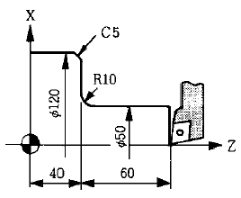
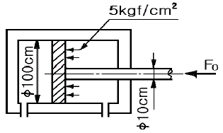
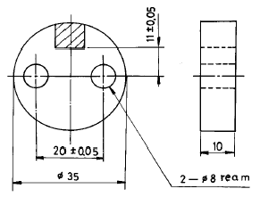
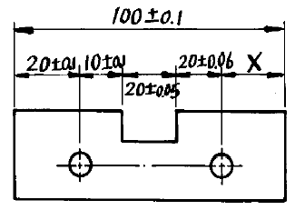

치공구설계산업기사 (2003-08-31 기출문제)
1과목: 정밀가공학
1. 어느 공구재료의 Taylor 공구 수명식의 지수는 n = 0.5, 상수는 C = 100 일 때, 절삭속도를 50% 감소한다면, 이 공구의 수명은 원래 수명의 몇 배가 되겠는가?
- 2 배
- 3 배
- 4 배
- 8 배
(정답률: 알수없음)

2. 선반에서 테이퍼를 깎는 방법이 아닌 것은?
- 복식공구대를 사용한다.
- 테이퍼 절삭용 부속장치를 이용한다.
- 백기어를 사용한다.
- 심압대를 편위 시킨다.
(정답률: 알수없음)
3. 보기와 같은 제품가공에서 자동 라운딩 가공 프로그램인 것은?

- G01 Z40.0 R-10.0 ;
- G01 Z40.0 R10.0 ;
- G01 W40.0 R10.0 ;
- G01 W40.0 R-10.0 ;
(정답률: 알수없음)
4. 다음 중 입도가 작고 연한 숫돌을 작은압력으로 가공물의 표면에 가압하면서 가공물에 피이드를 주고, 숫돌을 진동 시키면서 가공하는 것은?
- 초음파 가공
- 래핑
- 액체 호우닝
- 슈퍼피니싱
(정답률: 알수없음)
5. 다음 입자가공 방법 중 자유입자 가공법인 것은?
- 연삭
- 래핑
- 수우퍼피니싱
- 호닝
(정답률: 알수없음)
6. 절삭유의 주요 역할 설명으로 틀린 것은?
- 냉각작용
- 부식작용
- 윤활작용
- 세척작용
(정답률: 알수없음)
7. 다음 절삭공구 재료 중에서 고온경도가 가장 높은 것은?
- 스텔라이트
- 초경합금
- 고속도강
- 세라믹
(정답률: 알수없음)
8. 연삭유의 구비조건이 아닌 것은?
- 가공면의 정도를 좋게 할 것
- 공구 수명을 크게 할 것
- 연삭성을 좋게 할 것
- 거품이 있을 것
(정답률: 알수없음)
9. 선반을 이용하여 지름이 30cm인 환봉의 표면을 절삭속도를 30m/min로 절삭하려 할 경우 회전수를 약 몇 rpm으로 하여야 하는가?
- 30
- 32
- 35
- 38
(정답률: 알수없음)
10. 수치제어 공작기계에서 공구대의 속도가 0 또는 최대 값의 어느 것인가를 가짐으로써 단속적인 운동을 반복하는 서보 기구의 추종운동 방식은?
- 온 오프(on-off)제어 방식
- 시스템(system)제어 방식
- 비례제어 방식
- 모방제어 방식
(정답률: 알수없음)
11. 절삭에서 절삭저항이 600kgf, 절삭속도가 75m/min이라면 절삭동력은 약 몇 PS 인가?
- 4.0
- 6.0
- 8.0
- 10.0
(정답률: 알수없음)
12. 공구와 공작물 사이에서 발생된 진동과 충돌 에너지를 이용하여 경질표면 제품을 가공하는 특수가공법은?
- 전해가공(electrochemical machining)
- 이온빔가공(ion beam machining)
- 초음파가공(ultrasonic machining)
- 에칭가공(etching machining)
(정답률: 알수없음)
13. 여러번 사용한 드릴은 웨브(web)의 두께가 크게 되므로, 절삭성을 좋게 하기 위하여 선단부를 그라인딩 가공하는 작업을 의미하는 용어는?
- 투루잉(truing)
- 드레싱(dressing)
- 글레이징(glazing)
- 씨닝(thinning)
(정답률: 알수없음)
14. 공작물의 가공길이가 600mm이고, 직경이 50mm인 S45C 강을 절삭속도는 130m/min, 절삭깊이가 2.5mm, 이송속도를 0.25mm/rev로 가공할 때 1회 가공시 걸리는 가공시간은 약 몇 분(min)인가?
- 1.9
- 2.9
- 3.9
- 4.9
(정답률: 알수없음)
15. 호닝의 다듬질 면 조도에 가장 큰 영향을 주는 것은?
- 조직
- 결합제
- 숫돌 입도
- 숫돌 크기
(정답률: 알수없음)
16. 다음 금속재료 중에서 전해연마가 불가능한 것은?
- 강
- 주철
- 구리
- 알루미늄
(정답률: 알수없음)
17. 소성 변형으로 표면층의 경도와 강도가 증가되어 피로 한도를 높여 주는 현상은?
- 시닝 효과
- 피닝 효과
- 안전 효과
- 응력 효과
(정답률: 알수없음)
18. 지름 30mm 드릴로 연강에 드릴작업을 하는데 드릴링 머신의 주축의 회전수가 500rpm이고 절삭저항이 65kgf일 때의 이송이 0.2mm/rev였다면 깊이 48mm의 구멍을 가공하는데 소요하는 정미 소요시간은 몇 초 걸리겠는가? (단, 날끝높이는 2mm이다.)
- 20 sec
- 30 sec
- 25 sec
- 35 sec
(정답률: 알수없음)
19. 다음 내면가공 공작기계 중 가장 정밀한 면을 얻을 수 있는 것은?
- 보링 머신
- 내면 연삭기
- 밀링 머신
- 호닝 머신
(정답률: 알수없음)
20. 밀링 분할대에 있어서 분할 크랭크 핸들을 1회전하면 주축은 몇 회전하겠는가?
- 4 회전
- 1/4 회전
- 40 회전
- 1/40 회전
(정답률: 알수없음)
2과목: 치공구설계
21. 다음은 치공구 조립시에 사용되는 맞춤핀(dowel pin)에 대한 설명이다. 잘못된 것은?
- 맞춤핀을 두 부품의 조립시 위치 유지를 위하여 사용 한다.
- 맞춤핀은 테이퍼형과 분할형이 있다.
- 테이퍼 핀은 분해조립이 필요한 곳에 사용한다.
- 맞춤핀의 박힘길이는 핀지름의 1.5族2배가 적합하다.
(정답률: 알수없음)
22. 제품 위치 공차가 ×± 0.1 이라면 치공구 공차로서 적합 하지 않은 것은 어느 것인가?
- × ± 0.⑤
- × ± 0.03
- × ± 0.02
- × ± 0.01
(정답률: 알수없음)
23. ø30± 0.2인 내경의 MMC 값은 얼마인가?
- 29.8
- 29.9
- 30.1
- 30.2
(정답률: 알수없음)
24. 절삭공구의 기본 요구조건이 아닌 것은?
- 절삭되는 재질보다 경도가 높아야 된다.
- 공작물 재질의 저항에 이길 수 있고, 동력과 힘에 견딜수 있어야 한다.
- 온도가 올라가도 경도가 떨어지지 않아야 한다.
- 칩(chip)과의 친화력을 좋게하는 재질이어야 한다.
(정답률: 알수없음)
25. 절삭공구에서 경사각(rake angle)의 역할은?
- 공구와 공작물 사이의 마찰을 방지함
- 절삭칩의 유출을 좋게 함
- 연속된 칩의 형성을 파쇄함
- 절삭력의 분배로 진동을 방지함
(정답률: 알수없음)
26. 다음 그림과 같은 실린더내의 유압에 의해 발생되는 작동력(Fo)는 몇 kgf 인가?

- 388772
- 38.8772
- 38877.2
- 388.772
(정답률: 알수없음)
27. 다음 게이지(gauge) 중 샘플(sample)용 검사 또는 수입검사에 주로 사용되는 게이지는?
- 공작용 게이지(working gauge)
- 점검 게이지(reference gauge)
- 검사용 게이지(inspection gauge)
- 기준 게이지(master gauge)
(정답률: 알수없음)
28. 위치결정구를 가깝게 위치시켜 공작물이 불완전하게 설치되어 있다. 공작물 관리 중 어떤 관리가 잘못된 것인가?
- 평형의 원리
- 기하학적 관리
- 치수 관리
- 기계적 관리
(정답률: 알수없음)
29. 일반 드릴지그(drill jig)에서 칩의 길이가 긴 재료인 경우 가공될 부품과 드릴부싱(drill bushing)끝간의 칩여유(chip clearance)는 얼마로 하여야 하는가?
- 드릴경의 0.5배 미만
- 드릴경의 0.5∼1배
- 드릴경의 1∼1.5배
- 5mm 이내
(정답률: 알수없음)
30. 위치 결정법(Locating)에서 완전 중심 결정(full centering)방법 이란?
- 1중심 결정
- 2중심 결정
- 3중심 결정
- 4중심 결정
(정답률: 알수없음)
31. 다음 그림에서 빗금친 부분을 밀링 작업하고자 한다. 이 에 사용할 고정구 형태 중 적합한 것은?

- 판형 고정구
- 분할 고정구
- 바이스 죠 고정구
- 박스 고정구
(정답률: 알수없음)
32. Drill에 대한 다음 설명 중 잘못된 것은?
- 드릴의 실제치수는 호칭치수 보다 크다.
- Al, Mg, Cu 등의 깊은 구멍 가공시에 high helix drill로 한다.
- web의 두께는 직경이 커짐에 따라 증가한다.
- 일반적인 선단각(point angle)은 118° 로 한다.
(정답률: 알수없음)
33. 다음 중 유량제어 밸브의 역할은?
- 일의 크기
- 일의 속도
- 일의 방향
- 일의 시간
(정답률: 알수없음)
34. 다음 중 중심위치 결정구가 아닌 것은?
- 맨드릴
- 연동척
- V-블록
- 단동척
(정답률: 알수없음)
35. 대형의 정밀한 지그, 고정구의 제작시 열팽창계수가 서로 다른 재료를 조합하여 제작하므로 온도에 의한 변형이 크다. 1m 길이의 연강봉을 20℃ 올리면 신장은 얼마인가? (단, 연강의 열팽창계수는 0.0000112이다.)
- 0.112mm
- 0.218mm
- 0.224mm
- 0.448mm
(정답률: 알수없음)
36. 다음 중에서 유량제어 밸브는?
- 릴리프 밸브
- 체크 밸브
- 셔틀 밸브
- 교축 밸브
(정답률: 알수없음)
37. 밀링 작업에서 정확한 절삭 깊이나 절삭 폭을 정하기 위해 고정구에 설치하는 장치는?
- 셋팅 블록
- 블록 게이지
- 하이트 게이지
- 위치 결정핀
(정답률: 알수없음)
38. 스트래들 밀링(straddle milling)작업시 두커터의 정확한 간격을 유지시키기 위해 사용하는 것은?
- 슬리브(sleeve)
- 블록게이지(block gage)
- 평행봉(parallel bar)
- 간극게이지(feeler gage)
(정답률: 알수없음)
39. 박스지그(box jig)에 대한 설명 중 틀린 것은?
- 견고하게 클램핑 할 수 있다.
- 제작비가 비교적 많이 든다.
- 칩 배출이 용이하다.
- 여러면을 교대로 구멍 가공할 수 있다.
(정답률: 알수없음)
40. ø13.00± 0.10의 구멍을 측정하기 위한 플러그 게이지의 정지측 및 통과측 치수로 가장 합리적인 것은? (단, 게이지 마모여유 = 0.01, 제작공차 - 0.008이다. MIL-STD 방식임)
- 정지측 : 13.117, 통과측 : 12.882
- 정지측 : 13.092, 통과측 : 12.918
- 정지측 : 13.008, 통과측 : 12.992
- 정지측 : 13.192, 통과측 : 12.808
(정답률: 알수없음)
3과목: 치공구재료 및 정밀계측
41. 다음 중 치공구의 네스트(nest), 바이스조오(vise jaw)등 특수 위치결정구(holding derice)에 가장 많이 사용되는 비철금속 재료는?
- 비스무트 합금
- 슈퍼인바
- 초경합금강
- 코엘린바
(정답률: 알수없음)
42. 다음 비철금속의 물리적 성질 중 전기 전도율이 가장 높은 재료는?
- 구리(Cu)
- 은(Ag)
- 아연(Zn)
- 알루미늄(Al)
(정답률: 알수없음)
43. 대형 기어, 원형 다이스(circular dies), 긴 축 등 대형 가공물이나 형상이 불균일한 제품에 사용되는 표면경화법으로 다음 중 가장 적합한 것은?
- 도장법.
- 침탄법.
- 화염경화법.
- 질화법.
(정답률: 알수없음)
44. 공구의 표면에 단일 또는 복합 금속상을 탄화물, 질화물, 산화물의 형태로 진공 중에서 코팅하는 표면처리기법인 PVD의 종류 중 저항가열 필라민트나 전자빔으로 가열하여 코팅하는 방법인 것은?
- 스퍼터링법
- 진공 증착법
- 아크 증발방식 이온 플레이팅법
- 전자빔 가열방식 이온 플레이팅법
(정답률: 알수없음)
45. 다음 공구 중 내열성이 가장 좋은 절삭공구는?
- 세라믹 공구
- 탄소 공구강
- 초경 합금
- 고속도강
(정답률: 알수없음)
46. 표면경화법의 일종인 금속침투법(Cementation)이 아닌 것은?
- 크로마이징(Chromizing)
- 실리콘아이징(Siliconizing)
- 니켈라이징(Nikelizing)
- 칼로라이징(Calorizing)
(정답률: 알수없음)
47. 비금속 치공구 재로로 2차 고정용 클램프로도 사용하는 합성고무인 것은?
- 알루미나
- 우레탄
- 에폭시
- 칩보드
(정답률: 알수없음)
48. 주철이 강재와 비교하여 치공구용 재료로서 많이 사용되는 중요한 이유와 가장 관계가 적은 것은?
- 알카리나 물에 대한 내식성이 우수하다.
- 충격이나 인장강도에 견디는 힘이 강하다.
- 압축강도가 크고 내마모성이 높다.
- 주조성 우수하여 복잡한 형상의 주조가 용이하다.
(정답률: 알수없음)
49. 인장시험에서 시험 전 평행부 길이55mm, 지름14mm, 표점 거리 50mm인 시험편을 시험후 절단된 표점거리를 측정하였더니 65mm 이었다. 이 시험편의 연신율은?
- 10％
- 15％
- 20％
- 30％
(정답률: 알수없음)
50. 다음 강 중 불변강(不變鋼)에 속하지 않는 것은?
- 인바(invar)강
- 엘린바(elinver)강
- 플래티나이트(platinite)강
- 하드 필드(hard field )강
(정답률: 알수없음)
51. 침탄용강의 구비조건으로 틀린 것은?
- 저탄소강이어야 한다.
- 고온에서 결정성장이 없어야 한다.
- 기포 및 균열 결함이 없어야 한다.
- 경화층 경도는 낮고 피로성이 낮아야 한다.
(정답률: 알수없음)
52. 다음 재료 중 인장강도가 가장 큰 것은?
- 훼라이트 주철
- 구상 흑연주철
- 백심 가단주철
- 흑심 가단주철
(정답률: 알수없음)
53. 내부에 존재하는 핀홀(pin hole)등의 결함 검출은 곤란하나 강자성체인 재료 표면에 존재하는 균열의 검사에 가장 적합한 비파괴 시험방법은?
- 방사선 탐상시험
- 와류 탐상시험
- 초음파 탐상시험
- 자분 탐상시험
(정답률: 알수없음)
54. 특수강에 함유되는 특수원소인 Mo 첨가시 나타나는 가장 중요한 특성은?
- 저온취성 방지
- 뜨임취성 방지
- 전자기적 특성부여
- 내식성 향상
(정답률: 알수없음)
55. 상온에서 크리이프(creep)현상이 나타나는 금속은?
- 철(Fe)
- 구리(Cu)
- 납(Pb)
- 알루미늄(Al)
(정답률: 알수없음)
56. 탄소 공구강의 담금질 처리 전에 반드시 선행시켜야 하는 열처리는?
- 완전 풀림
- 가단화 풀림
- 구상화 풀림
- 응력제거 풀림
(정답률: 알수없음)
57. 다음 치공구 재료 중 시효경화에 의한 열처리를 해야하는 대표적인 것은?
- 합금주철
- 합금강
- 두랄루민
- 우레탄
(정답률: 알수없음)
58. 세라믹 공구의 주성분은 다음 중 어느 것인가?
- Al2O3
- W-C
- Ta-C
- Ti-C
(정답률: 알수없음)
59. 다음의 치공구용 냉각재 중 냉각효과가 가장 큰 것은?
- 소금물
- 경유
- 비눗물
- 공기
(정답률: 알수없음)
60. 방전가공용 전극재료인 흑연을 구리와 비교한 특징 설명으로 틀린 것은?
- 피가공성이 좋다.
- 전극 소모가 많다.
- 무게가 구리의 1/5 정도이고, 작업이 용이하다.
- 방전 가공 속도가 빠르고, 열팽창계수가 작다.
(정답률: 알수없음)
4과목: 기계공정설계
61. 특수목적용 전용(專用)장비의 잇점은 어느 것인가?
- 유지비용 절감
- 기계가공의 융통성
- 검사비용 증대
- 균일한 제품생산
(정답률: 알수없음)
62. 그림과 같이 설계된 제품이 있다면 결과적으로 "X"의 치수는 얼마가 되는가?

- 30 ± 0.04
- 30 ± 0.⑤
- 30 ± 0.16
- 30 ± 0.41
(정답률: 알수없음)
63. 다음 중 0.01 mm보통형 다이얼 게이지의 확대 방식은?
- 레버식
- 치차식
- 나사식
- 광학식
(정답률: 알수없음)
64. 미터나사에서 최적 3침의 지름이 3.000mm 인 3침을 이용하여 외측거리 M=50.000mm를 얻었을 때의 유효지름은 몇 mm 인가? (단, 최적 삼침 선경은 dw=0.57735 × P 임 )
- 45.500
- 45.700
- 45.900
- 46.200
(정답률: 알수없음)
65. 외측 마이크로미터에서 생기는 기차(器差)의 원인과 가장 관계가 적은 것은?
- 측정면의 평행도
- 딤블의 원통도
- 눈금 오차
- 측정 스핀들의 피치 오차
(정답률: 알수없음)
66. 재료의 물리적 성질의 변화를 일으키는 가공공정이 아닌 것은?
- 숏피닝
- 열간가공
- 밀링
- 냉간가공
(정답률: 알수없음)
67. 25∼50 mm 측정범위를 가진 외경 마이크로미터의 앤빌과 스핀들의 평행도를 교정하고자 한다. 필요 없는 것은?
- 광선정반
- 게이지 블록
- 단색광원장치
- 평행광선정반
(정답률: 알수없음)
68. 다음 중 접합(joining)공정이 아닌 것은?
- 용접
- 리베팅
- 열처리
- 나사조임
(정답률: 알수없음)
69. 한계 게이지(limit gauge)에 관한 설명 중 틀린 것은?
- 공작물의 정밀도를 일정범위 내에서 정확하게 유지 시킬수 있다.
- 대량 생산의 공작물 측정에 유리하다.
- 공작물의 정확한 치수를 알 수 있다.
- 공작물에 호환성을 부여한다.
(정답률: 알수없음)
70. 다음 중 측정불확도의 설명으로 가장 올바른 것은?
- 측정시 발생하는 개인오차의 크기
- 측정기 구조상에서 일어나는 오차
- 외부조건에 의한 오차의 크기
- 측정량에 영향을 미칠수 있는 값들의 분포를 특성화 한 파라미터
(정답률: 알수없음)
71. 기계공정설계에 대한 다음 설명 중 틀린 것은?
- 부품도를 변경시킬 수 있는 것은 원칙적으로 설계자 뿐이다.
- 생산원가를 줄이기 위하여 설계자와 제조자는 상호협력한다.
- 보조공정의 선택은 부품설계자에 의해서 결정한다.
- 기본공정은 공정설계 기사가 제품의 형상을 보고 결정한다.
(정답률: 알수없음)
72. 공차 분석표(tolerance chart)에 나타나지 않는 사항은 어느 것인가?
- 절삭량
- 표면거칠기
- 가공치수
- 결과치수
(정답률: 알수없음)
73. 오토콜리메이터에서 초점거리 f=600 mm일 때 2′ 의 각도 변화에 대한 상의 이동량은?
- 0.498 mm
- 0.698 mm
- 0.704 mm
- 0.804 mm
(정답률: 알수없음)
74. 비대칭 부품을 고정구에 장착할 때 반대로 가공하는 것을 방지하도록 부품의 올바른 위치를 쉽게 찾아내어 신속하게 장착시키기 위한 보조장치는?
- 풀 프루핑(Fool-proofing)
- 네스팅(Nesting)
- 위치결정구(Locator)
- 분할 핀(Indexing pin)
(정답률: 알수없음)
75. 간접측정이 아닌 것은?
- 사인센터에 의한 테이퍼 측정
- 더브테일 측정
- 스냅 게이지에 의한 원통측정
- 삼침에 의한 나사의 유효지름 측정
(정답률: 알수없음)
76. 표면 거칠기를 나타내는 방법이 아닌 것은?
- 최대 높이 거칠기
- 중심선 평균 거칠기
- 면적 평균 거칠기
- 10점 평균 거칠기
(정답률: 알수없음)
77. 형상공차 중 관련형체의 위치에 관한 것은 어느 것인가?
- 원통도
- 진직도
- 동심도
- 직각도
(정답률: 알수없음)
78. 일반적으로 공정도에 포함되지 않는 사항은?
- 가공부위
- 사용기계
- 공정치수
- 특수공구형상
(정답률: 알수없음)
79. 공정치수(processing dimension)에 대한 설명 중 틀린 것은?
- 공정설계자가 결정한 치수로서 부품도에는 나타나 있지 않다.
- 각 작업에서 가공해야 할 치수이다.
- 열처리후에는 통상 최종연삭작업을 하므로 공정치수가 불필요하다.
- 컵을 제작하기 위한 블랭크(blank)의 직경은 공정치수가 된다.
(정답률: 알수없음)
80. 다음 제조공정중에서 보조공정(Auxiliary operation)이라고 할 수 없는 것은?
- 검사(inspection)
- 세척(cleaning)
- 교정(straightening)
- 열처리(heat treatment)
(정답률: 알수없음)
T = C * N^(-n)
여기서 T는 공구의 수명, C는 상수, N은 절삭속도이며, n은 지수이다.
문제에서 n = 0.5, C = 100 이므로, 원래 수명식은 다음과 같다.
T = 100 * N^(-0.5)
절삭속도가 50% 감소한다는 것은 N이 0.5배가 된다는 것이다. 따라서 새로운 수명식은 다음과 같다.
T' = 100 * (0.5N)^(-0.5) = 200 * N^(0.5)
이제 원래 수명식과 새로운 수명식의 비율을 구하면 된다.
T' / T = (200 * N^(0.5)) / (100 * N^(-0.5)) = 2 * N
따라서 절삭속도가 50% 감소하면, 공구의 수명은 원래 수명의 2배가 된다. 따라서 정답은 "2 배"이다.